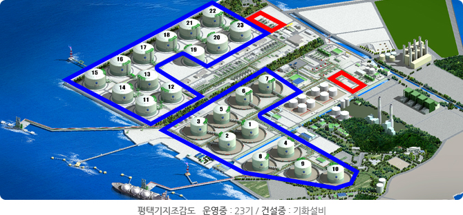
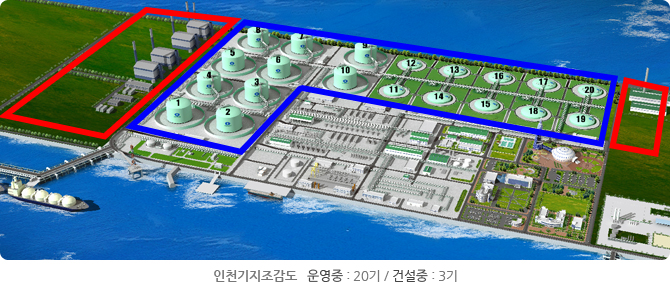
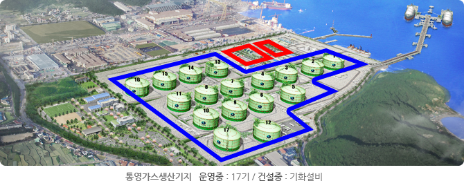
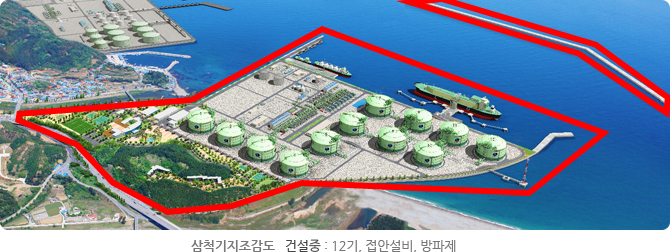

건설
생산기지 건설사업 추진현황 (2013년 9월 30일 기준)
| 사업명 | 사업규모 | 사업기간 | 비고 | |
|---|---|---|---|---|
| 평택 | LNG기화송출설비 |
|
'12.09~'14.12 | 준공:'14.12 |
| 인천 | 저장탱크 확충 |
|
'12.07~'18.01 | 준공:'18.12 |
| LNG기화송출설비 |
|
'11.05~'13.12 '12.07~'14.12 '12.07~'15.12 |
3지구 480T/H:'13.12 240T/H:'14.12 4지구 720T/H:'15.12 |
|
| 통영 | LNG기화송출설비 |
|
'11.05~'13.12 '12.07~'14.12 |
준공:'13.12 준공:'14.12 |
| 삼척 | 1단계 |
|
'08.07~'15.0 |
부지:'14.07 저장탱크(#1~3):'14.07 저장탱크(#4):'15.07 LNG부두:'14.04 방파제:'14.05 |
| 2단계 1차(#5~7) |
|
'09.06~'15.12 | 준공:'16.06 | |
| 2단계2차(#8,9) |
|
'09. 06 ~'16. 06 | 준공 : '16. 06 | |
| 3단계(#10~12) |
|
'12.07~'17.05 | 저장탱크:'17.05 기화설비:'14.12 |
|
공급설비 건설사업 추진현황 (2013년 9월 30일 기준)
| 사업명 | 사업규모 | 사업기간 | 비고 |
|---|---|---|---|
| 1단계 공급확대 주배관 건설공사 (19개 사업) |
|
'08.12~'14.12 | 제천 ~ 영월 등 628km 준공 |
| 2단계 공급확대 주배관 건설공사 (7개 사업) |
|
'12.09~'16.12 | |
| 발전용 공급설비 건설공사 (10개 사업) |
|
'10.10~'15.09 | |
| 압력보강 건설공사 등 (8개 사업) |
|
'08.12~'17.11 | 화양 ~ 금곡 19km 준공 |
생산기지 조감도
- 
- 
- 
- 
- 천연가스 공급확대 배관망 건설공사 배관망도 다운받기